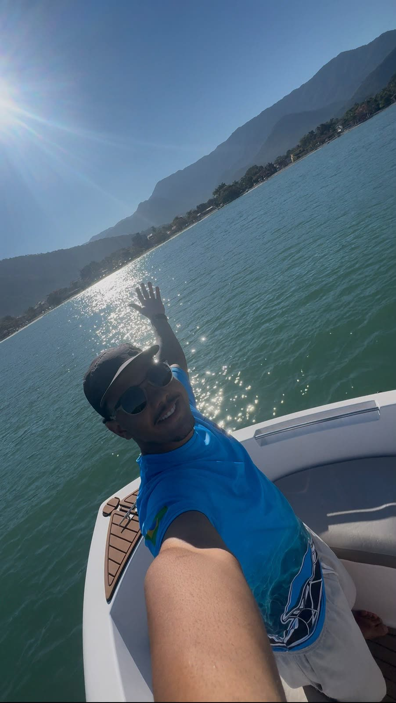
AndersonDono · atendimento
Anderson muito solícito e atencioso, prestando as informações com total clareza.Marcelo P. · Google

Ilha das Couves e as ilhas do norte, ou a Ilha Anchieta e suas 5 praias no sul. Lancha só para o seu grupo, marinheiro que conta a história de cada ilha e mergulho com os peixinhos.

Ilhas de água verde, mergulho com peixinhos e praia para almoçar. Toque em um roteiro para ver as paradas.
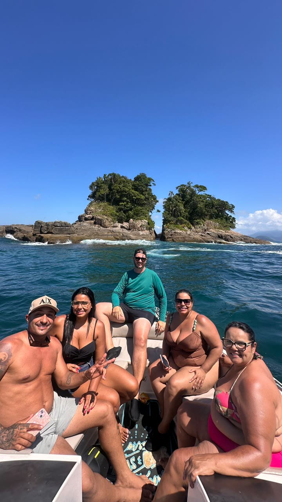
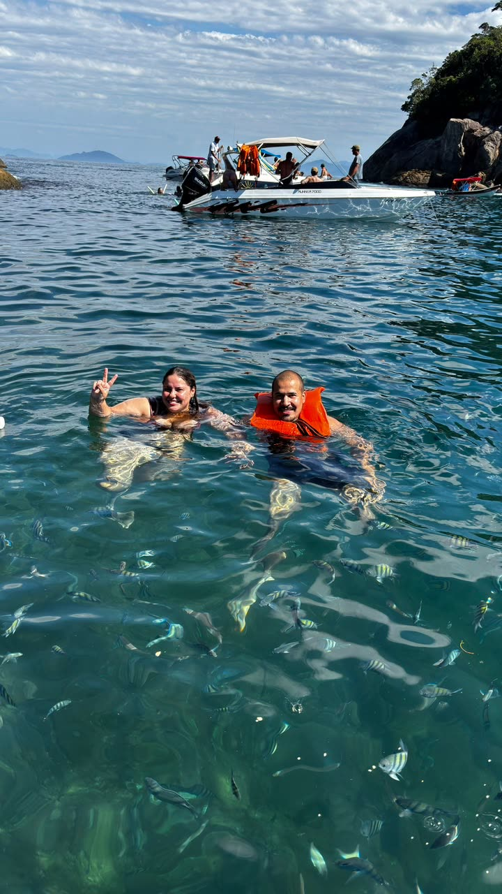
A mensagem vai pronta para o WhatsApp. Valores e horários são confirmados na hora.
Atendimento todos os dias, das 07h às 22h.
A lancha é do seu grupo: dá para comemorar, levar o pet e fazer churrasco entre uma ilha e outra.
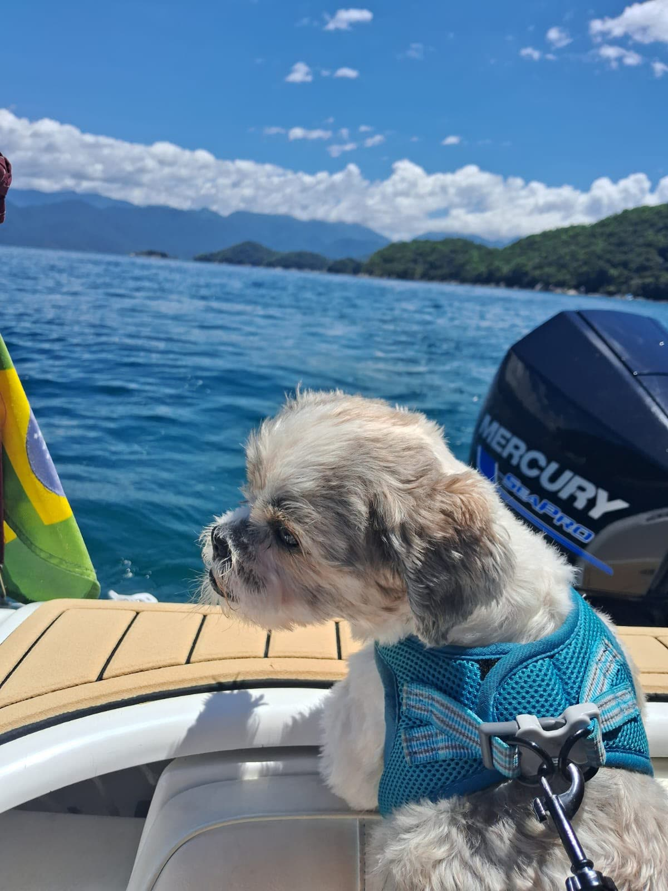

Nas avaliações do Google, quem foi lembra do atendimento e de quem estava no timão.

Anderson muito solícito e atencioso, prestando as informações com total clareza.Marcelo P. · Google
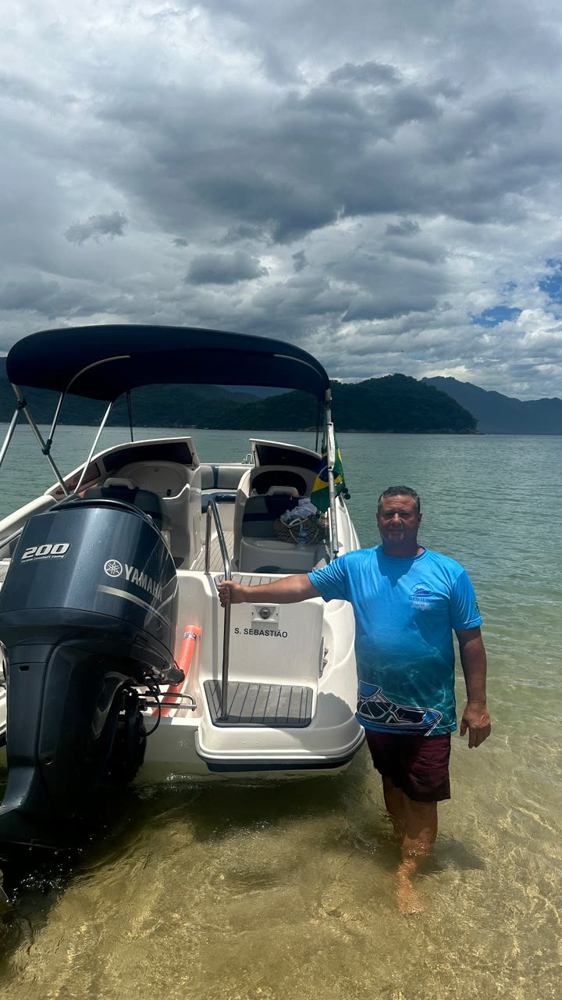
Além da simpatia, nos contou sobre cada ponto visitado.Mishelly A. · Google
Muito competente, passando muita confiança na condução da lancha.Marcelo P. · Google
Super solícito, educado e gente boa.Ana F. · Google
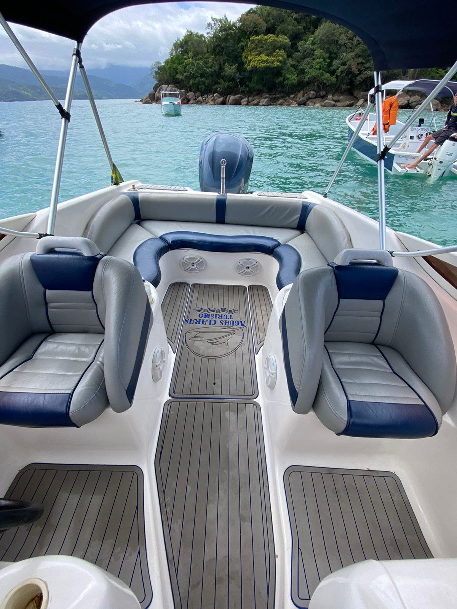
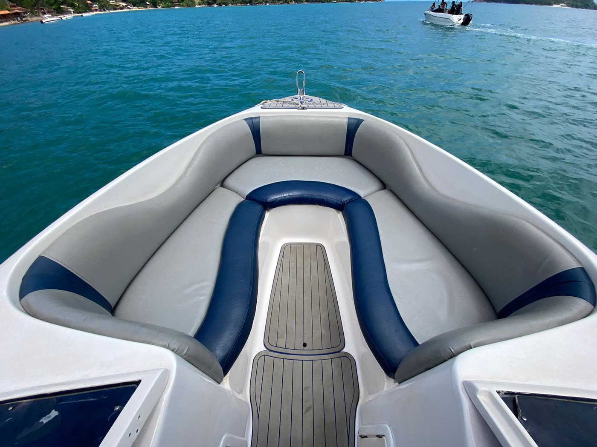
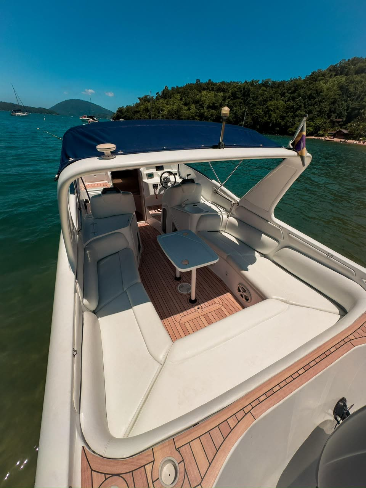
Horário, rota, segurança e as melhores paradas do dia ficam com a gente.
Estofado confortável e trajeto estável, até em dia de mar mexido.
Colete para todos, inclusive crianças, e marinheiro experiente no comando.
Se o tempo não colaborar, o passeio vai para outra data sem dor de cabeça.
Do primeiro contato ao embarque, todas as dúvidas respondidas.
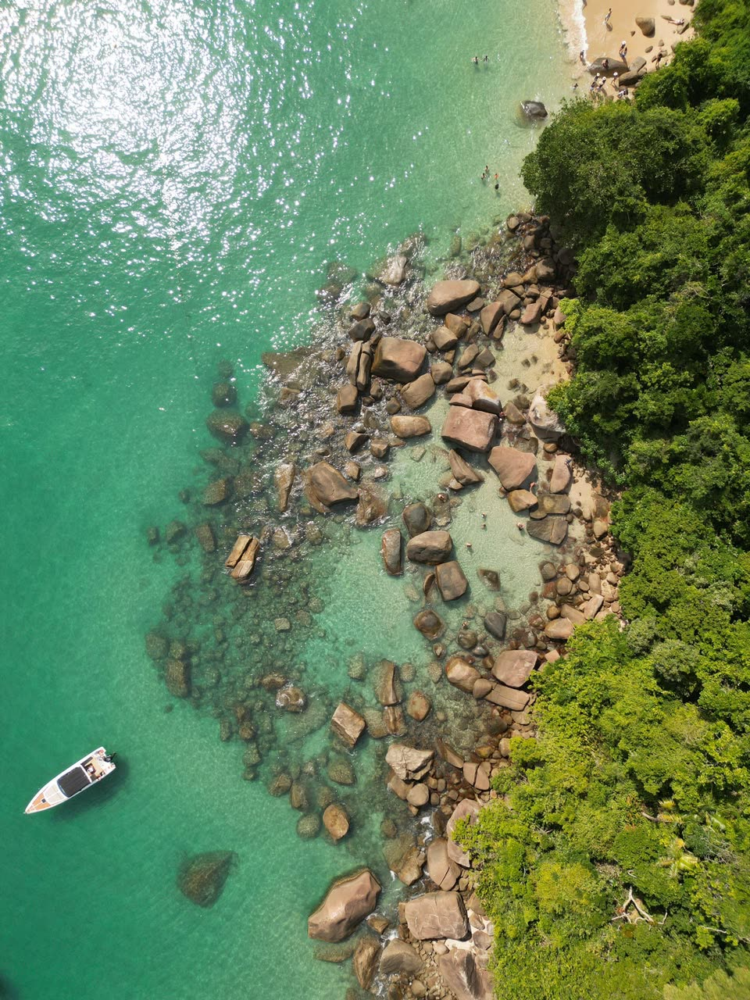


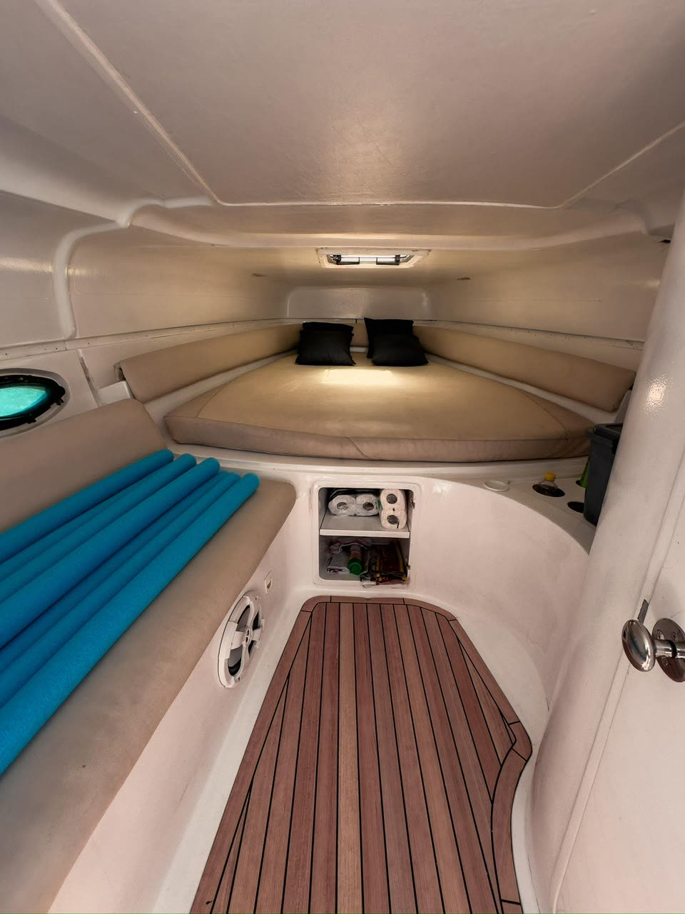

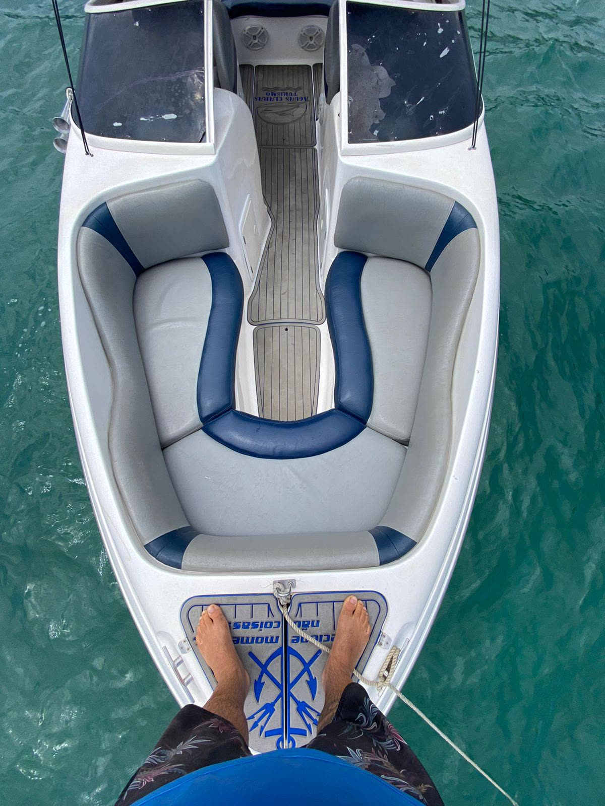
Deslize para o lado e toque para ampliar.
A lancha é excelente, nova, limpinha, potente e confortável. O melhor custo-benefício da cidade. Passeio nota 10!
Ainda tivemos a sorte de avistar um pequeno grupo de toninhas no trajeto.
Um dos melhores passeios que já fiz! Ainda foi sugerido um churrasco na lancha!
O tempo estava muito ruim no dia agendado e a empresa reagendou para termos uma experiência melhor.
Já é a segunda vez que alugamos a lancha com a empresa e, mais uma vez, tudo foi impecável.
Lancha bem nova e conservada. Marinheiro e equipe foram acessíveis, cuidadosos e prestativos.
O Roteiro Norte sai do Itaguá (Av. Leovigildo Dias Vieira). O Roteiro Sul pode sair do Itaguá ou do Saco da Ribeira. O ponto exato vai pelo WhatsApp na confirmação.
Check-in às 09h45, saída da praia às 10h00 e retorno por volta das 16h00. São 4 ilhas e 1 praia: Couves, Rachada, Porcos, Almada/Engenho, Prumirim e Toca da Velha.
Ilha Anchieta, a maior de Ubatuba, com as praias do Leste, Engenho, Presídio, Palmas e do Sul (snorkel com peixinhos). Almoço na Praia do Flamengo ou Sete Fontes. Dura 4h ou 6h.
Pode. Marque no "Monte seu passeio" ou avise no WhatsApp ao reservar.
Dá. A lancha tem churrasqueira; é só pedir na hora de reservar.
A segurança vem primeiro. Se o tempo não colaborar, o passeio é reagendado para outra data.
Pode, com colete do tamanho certo. Conte as idades no WhatsApp que a gente indica o melhor roteiro.
Chame no WhatsApp (12) 99112-3943 com a data e o número de pessoas. Os valores dependem do roteiro e do grupo e são confirmados na hora.
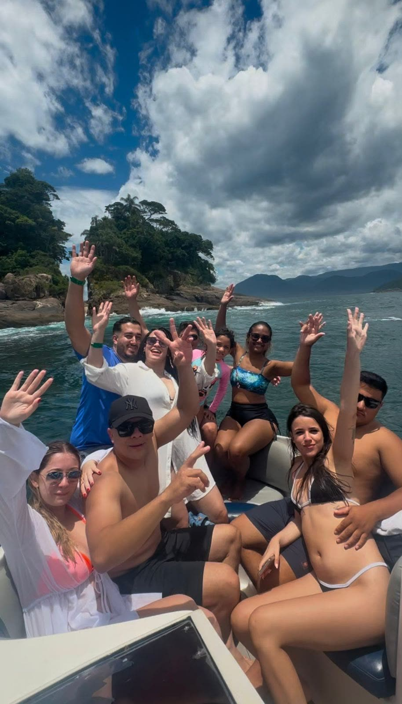
Fim de semana e feriado lotam rápido. Garanta a data do seu grupo agora.
Reservar pelo WhatsApp